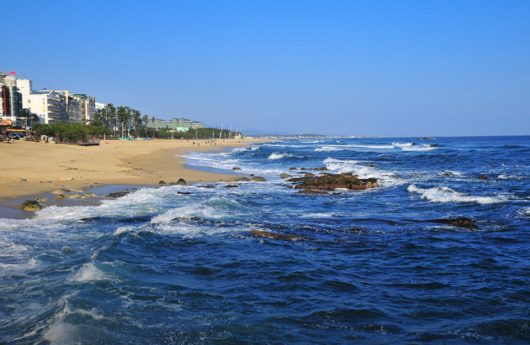
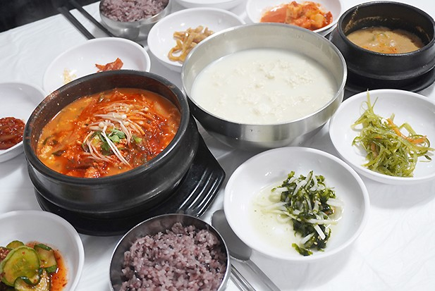
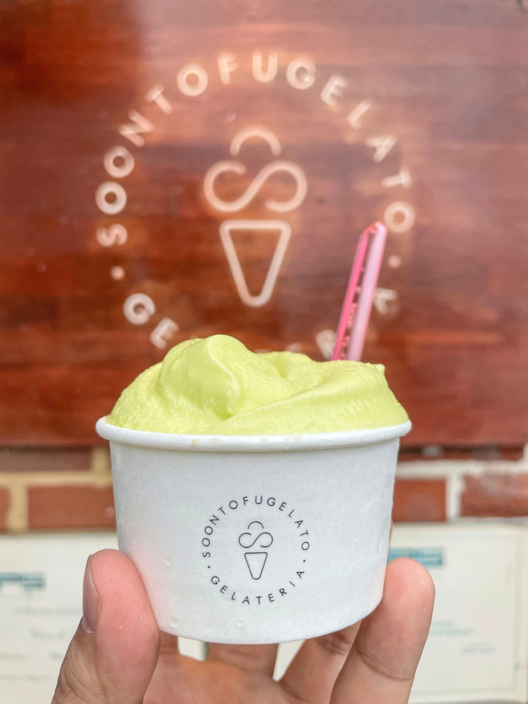
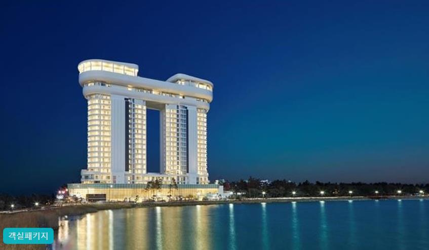
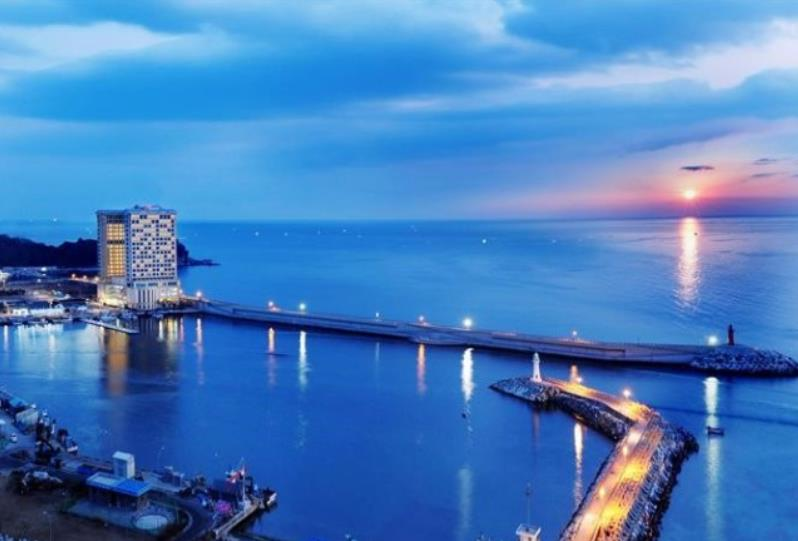

남이섬은 동화나라, 노래의 섬을 컨셉으로 다양한
문화행사, 콘서트 및 전시를 꾸준히 개최해 오고 있으며
어린이들에게는 꿈과 희망을, 연인들에게는 사랑과 추억을,
문화계 인사들에게는 창작의 터전과 기반을 마련해주고
있는 자연 생태 문화공간 입니다. 주요 시설로는
노래박물관, 그림책 놀이터, MICE 센터, 아트숍,
유니세프 라운지 등의 문화시설과 투개더파크, 나눔 열차,
스토리투어 버스 등의 유기시설이 갖춰져 있고
다양한 메뉴를 즐길 수 있는 식음시설, 다양한 테마로
꾸며진 객실과 강변의 독립적인 공간을 가진 별관으로
이루어진 숙박시설 호텔정관루가 있습니다.

경포 해변
(강원도 강릉시 창해로 514)
경포해변은 언제나 그렇듯 여름철 최고의
해수욕장 중 하나입니다. 무더운 여름철,
대한민국의 젊음을 느끼고 싶다면 부산의 해운대,
강릉의 경포대를 가라는 말이 있습니다. 경포는
동해안 최대 해변으로 유명합니다. 여름철 늘어선
파라솔은 물감을 뿌려놓은 것처럼 장관을 이루고 그
장관을 즐기고 나서야 강릉 관광의 시작이라고 말할
수 있습니다.
강원도의 맛집

송정희 어머니 순두부
(강원 속초시 원암학사평길 192)
강원도 송정희 어머니 순두부는 속초학사
평콩꽃마을 순두부촌에 위치해 있습니다.
웨이팅이 있고 주차장은 앞쪽과 옆쪽에 위치합니다.
국내산 콩을 사용하여 두부를 만들고 맛은
고소합니다. 메뉴는 모두부, 순두부, 얼큰 순두부,
해물 순두부가 있고 순두부 이외도 황태구이,
두부 전골 등이 있습니다.

순두부 젤라또 1호점
(강원 강릉시 초당순두부길 95-5)
순두부 젤라또는 김범준대표가 조그만 콩창고에서
순두부 젤라또를 개발하여 오픈한 강릉 최초의 순두부
디저트 브랜드 입니다. 초당순두부 본연의 맛과 정통
젤라또의 쫀득한 식감을 위해 이탈리아에서 직접
공수한 기계로 매일 만듭니다. 순두부 젤라또 뿐만
아니라 퓨전 젤라또, 순두부 도넛 까지 다양한 맛으로
즐겨보실 수 있습니다.
강원도의 숙소

스카이베이 호텔 경포
(강원도 강릉시 해안로 476)
스카이베이 경포 호텔은 한국의 관동팔경의 하나로
최고의 휴양지인 강릉 경포대 앞에 위치해 있습니다.
5성급 호텔로서 객실 538개와 연회장, 스카이 라운지 레스토랑과 바,
그리고 고급 스파 시설을 갖추고 다양한 서비스를 제공합니다. 호텔 전 객실에서는
푸른 동해 바다와 경포 호수의 아름다운 경관을
즐기실 수 있습니다.

라마다 호텔 속초
(강원도 속초시 대포항희망길 106)
라마다 속초는 동해의 푸른 바다와 아름다운 속초의
자연환경과 함께 생에 최고의 휴식과 추억을 선사합니다.
일출과 야경을 객실에서 편안하게 감상하실 수 있으며 대포항 바로 인근에
위치하고 있어 휴양과 관광, 행사가 모두 용이한 최적의 장소입니다.
부대 시설로는 수화물 보관 서비스, 조식, 어메니티, 비즈니스 센터,
피트니스 센터, 커피숍, 야외 테라스 등이 있습니다.